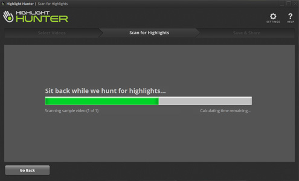
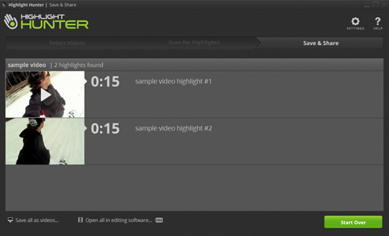

Record as you normally do. Any kind of camera will work. After each time something cool happens, cover the lens with your hand for one second.

When you get home, load all of your footage into Highlight Hunter. You can drag and drop the video files individually, or plug in your camera and let Highlight Hunter do the work for you.

Highlight Hunter scans your footage and finds all the times you covered the lens with your hand. Each time it finds one of these “bookmarks” it extracts the footage right before it.

When the scan is finished, you end up with a list of all the highlights you care about, without the boring footage in between. You can watch each highlight and get rid of any you don’t want to keep.

Once you have the highlights you like, you can trim them to get the length just right. You can also give each highlight a title.

That’s it! Now you can share highlights with one click to your friends on Facebook or other social sites. You can also save highlights to your computer to watch later.
Want to edit your highlights together into longer movies? Just save the highlights to your computer and open your favorite video editing software to finish the job.
Want to remove the small watermark that appears when you save? Check out Highlight Hunter Pro for video professionals.